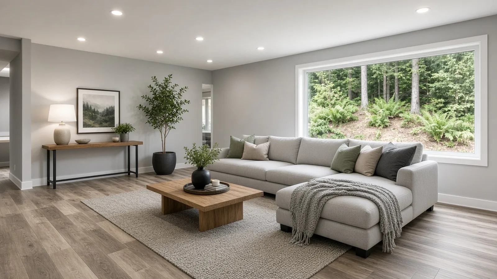
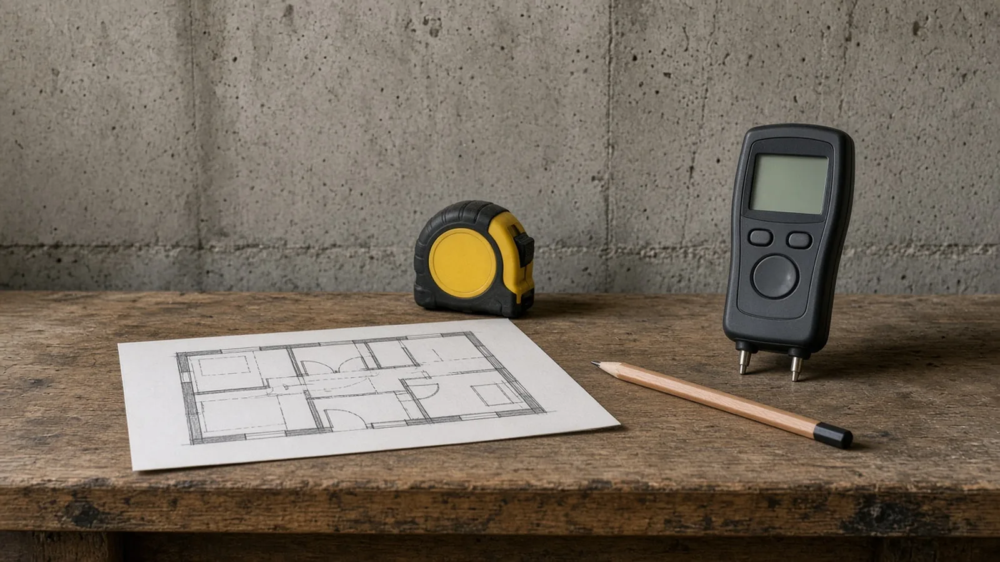
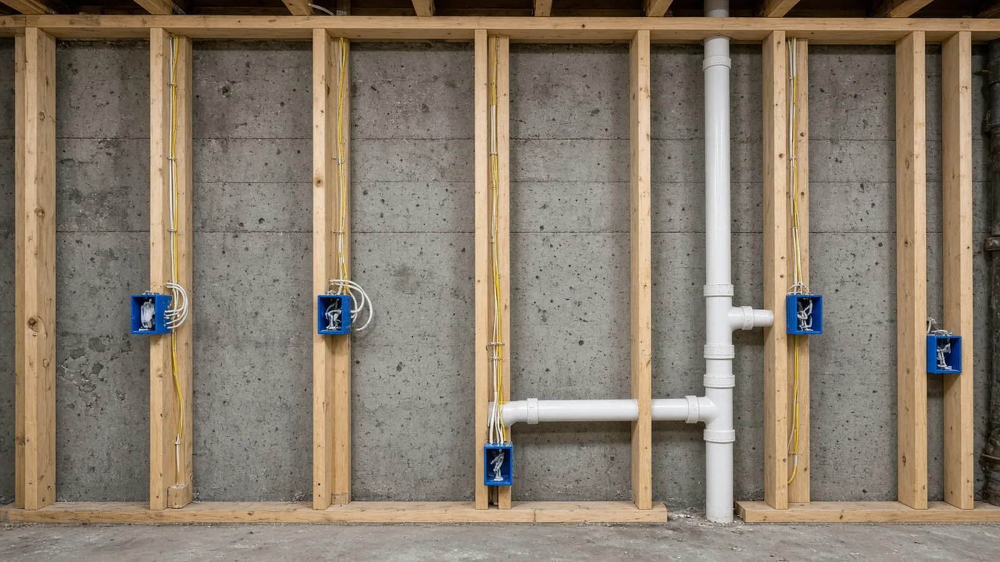
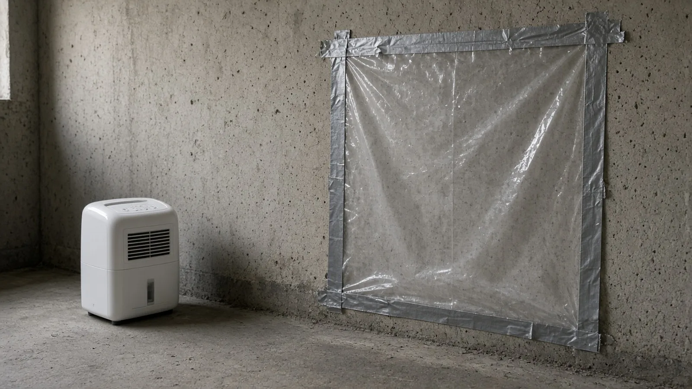
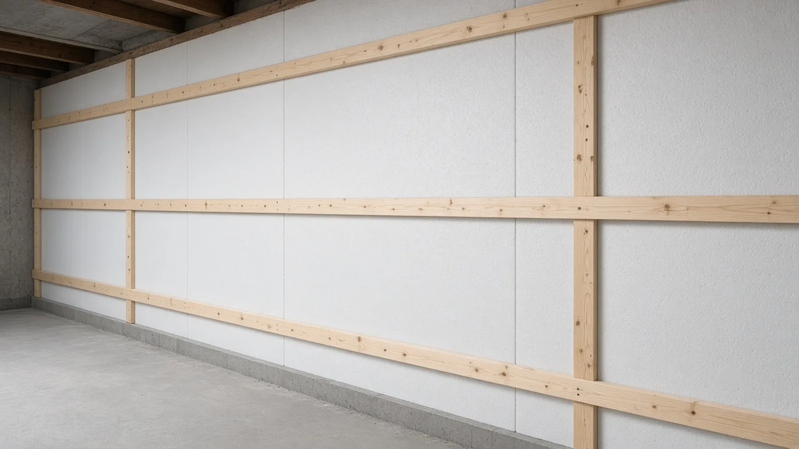
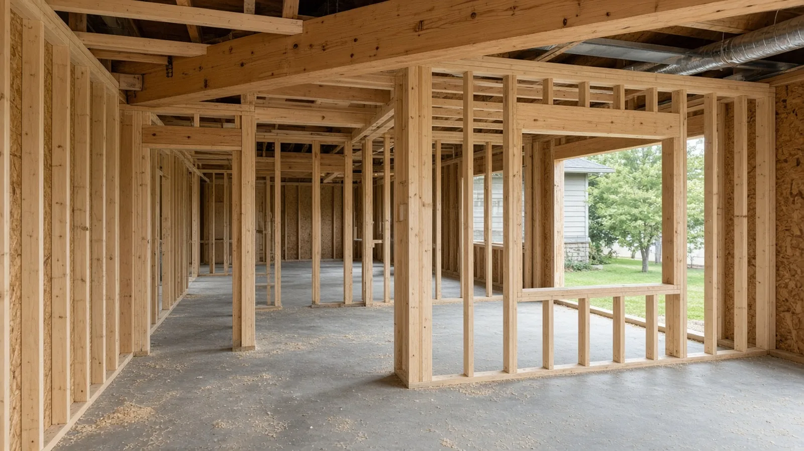
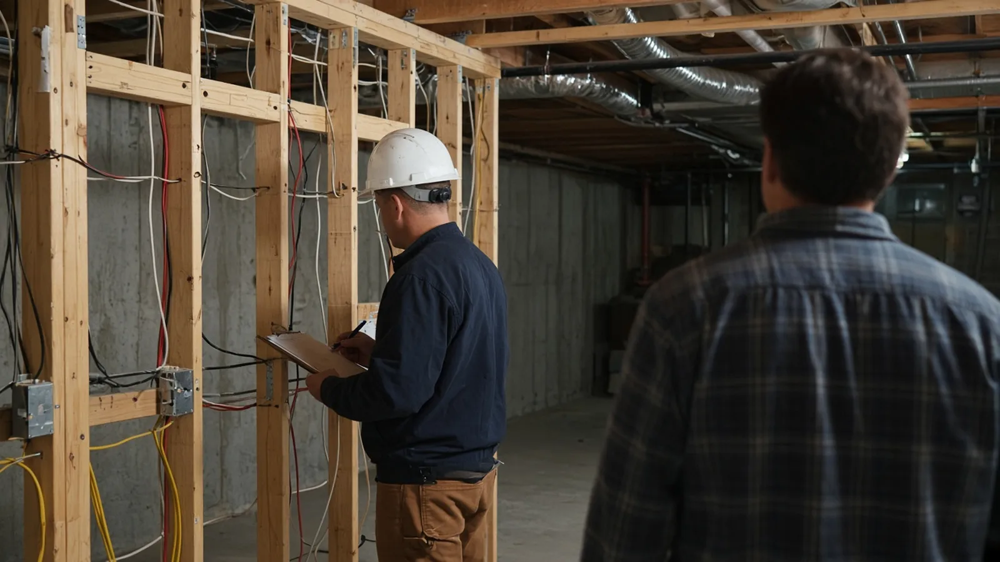
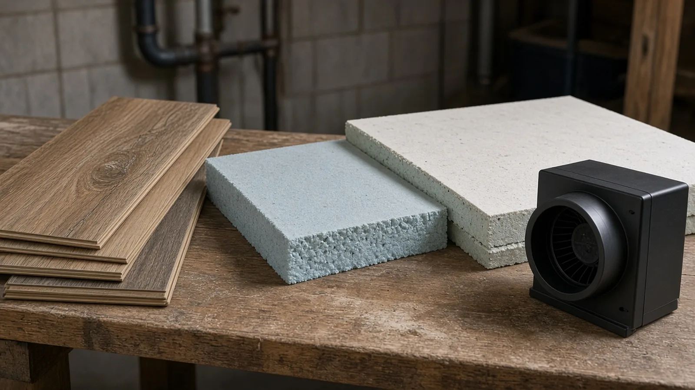
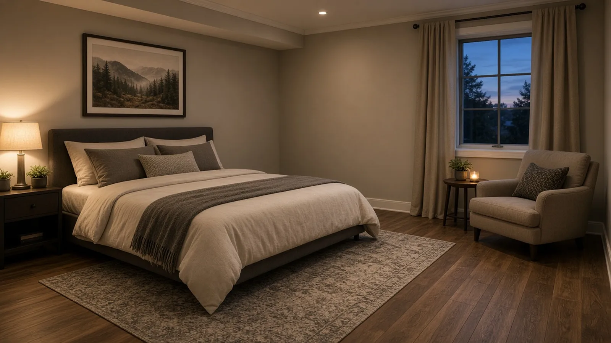

Basement Finishing Mukilteo WA — Permits, Moisture Checks, Radon, Electrical and Hiring
By Board of Project Stewardship Editorial
Key Takeaways
- Finishing a basement in Mukilteo is usually permit work. The City's Do You Need a Permit for That? page says any demolition of walls requires a building permit, plumbing moves need a permit, and a new water heater, furnace or heat pump needs its own plumbing or mechanical permit. Framing a new room, adding a bathroom or replacing a furnace in the basement all land in that list.
- The City's checklist is short but specific. Mukilteo's Residential Building Permit Checklist asks a building alteration with no added square footage for floor plans, a work area plan, and foundation, wall envelope and structural details where they apply. Everything is submitted at one time through the Online Permit Center.
- Electrical goes through the state, and moisture and radon come first. New wiring, circuits or breakers in Mukilteo must be approved and inspected by Washington L&I. Before any wall goes up, check the concrete for moisture and test for radon. The EPA radon page says testing is the only way to know your level.
Why a Mukilteo basement is worth finishing carefully
Many Mukilteo homes sit on sloped lots above Possession Sound, and a lot of them have daylight or partial basements on the downhill side. That space is often the cheapest square footage in the house to turn into a family room, guest suite, office or second bathroom, because the foundation, floor and roof already exist. It is also the part of the house most exposed to ground moisture, runoff from the hill above and soil gas. A basement finished without a moisture plan can end up as a closed-in room with damp drywall and musty carpet.
This guide is Mukilteo-specific. It is tied to City of Mukilteo, Washington State and federal pages read on November 26, 2026. For local context, start with the Board of Project Stewardship's Mukilteo planning hub, and for the county view see the Snohomish County remodel and addition hub. Use what follows as a list of questions to bring to the City and to any contractor, not as a substitute for the code or for the City's answer about your house.
Do you need a permit to finish a basement in Mukilteo?
The City's Do You Need a Permit for That? page does not have a line item called "basement," but the rules it lists cover almost every basement project:
- Walls: for kitchens, the City says any demolition of walls requires a building permit. Finishing a basement usually means framing new walls, removing old partitions or both.
- Plumbing: cosmetic bathroom changes do not need a permit, but the City says you need one any time plumbing or fixtures are moved or significantly altered. Adding a basement bathroom or a wet bar is plumbing work.
- Water heater: a plumbing permit is required to install or replace a water heater.
- Furnace or air conditioning: a mechanical permit is required to replace a furnace, heat pump or air conditioning unit.
- Windows: the City says all new windows require a building permit. That includes cutting a new basement window or enlarging one.
- Electrical: wiring work that adds new wiring, circuits or breakers must be approved and inspected by Washington L&I.
If the project also involves the outside of the house, such as new drainage, the same page says drainage work that builds, alters or repairs a stormwater facility needs an engineering permit, and so does any connection to an existing public or private drainage system. Retaining walls taller than 4 feet, or walls that carry a load, also need an engineering permit.

What the City's building permit checklist asks for
Mukilteo's Residential Building Permit Checklist for single-family and two-family projects splits work into categories. A basement finish that adds no square footage to the house falls under Building Alteration/Internal ADU, which lists:
- Floor plan(s).
- A work area plan.
- A foundation or footing plan, if applicable.
- An exterior wall envelope detail, if applicable.
- Structural drawings and structural calculations, if applicable.
If you are turning the basement into a separate living unit, notice that the checklist groups internal ADUs with building alterations. Read the Board of Project Stewardship's ADU checklist and ADU planning page before you decide, because a unit raises questions about separation, egress and utilities that a family room does not. If the work removes walls or old finishes, the checklist's Demo category asks for a site plan, a demolition plan and a hazardous materials report.
The checklist says to submit all documents at one time through the City's Online Permit Portal. If you are not sure who to ask, the City's main line is 425-263-8000.
How long does review take?
The Online Permit Center publishes the City's timelines. Plumbing, mechanical and residential re-roofing permits are generally issued within a week. For other new permit applications, the City says it tries to review them within six weeks and all resubmittals within four weeks. Permits are reviewed in the order received, and a permit is not valid until it is approved, paid for and issued. Incomplete applications stay open for editing for 21 days.
That means a basement plan with framing, a bathroom and a new egress window should be expected to take longer than a water heater swap. Build that review time into your schedule before you book trades.
Fees
The City posts a fee schedule linked from the Online Permit Center. This guide does not quote fees. Check the current schedule for your project, and ask the Permit Center if you are unsure which permits apply.
One warning is worth repeating from the City's Building and Permits page: local governments are seeing email scams that look like official permit correspondence and ask applicants for money. The City says it only accepts payments through its online portal or in person at City Hall, and it does not send invoices by email.
Electrical permits come from L&I, not the City
The City's permit page says electrical work that requires new wiring, circuits or breakers must be approved and inspected by Washington L&I. L&I's electrical permits, fees and inspections page adds the key rules:
- Electrical work in Washington requires a permit and inspection, with a few exceptions listed in WAC 296-46B-901.
- Electrical permits must be purchased by the electrical contractor or by the property owner or homeowner who will actually do the work. If you hire an electrical contractor, they must buy their own permit for the work they do on your property.
- You must purchase a permit before starting any electrical work.
- L&I inspects electrical work using the 2023 National Electrical Code.
A finished basement usually means new circuits for lights, outlets, a bathroom fan and perhaps a heat source. Ask your contractor who will pull the L&I permit and when the rough-in inspection will happen, because it has to pass before insulation and drywall cover the wiring. The Board of Project Stewardship's electrician directory and the electrical panel upgrade guide for Federal Way cover panel capacity questions that often come up when a basement adds load.

Moisture first: test the walls and the floor
Before you plan finishes, find out whether the concrete is dry. A simple first step used by many builders is to tape a square of plastic sheeting to the bare foundation wall and floor, wait a couple of days, and see where condensation forms. Moisture between the plastic and the concrete points to water coming through the foundation; moisture on the room side points to humid indoor air. Either result changes the plan.
On a sloped Mukilteo lot, water coming through the wall is often a drainage problem outside: downspouts emptying next to the house, a hillside that sends runoff toward the foundation or a footing drain that no longer works. Fix that before you insulate. The Board of Project Stewardship's yard and foundation drainage guide for Kenmore, foundation crack repair guide for Kent and crawl space moisture control guide for Auburn explain the outside fixes and when an engineer belongs on the job. Remember that new drainage connections in Mukilteo need an engineering permit, as noted above.
Inside, a dehumidifier is often part of a finished basement. Energy Star's dehumidifier guidance says certified models use 20 percent less energy than similar conventional units, that both portable and whole-home models are available, and that capacity depends on the size of the space and how damp it is without dehumidification.
This video from a long-running home improvement show walks through a moisture test, sealing leaking form-tie holes and insulating a basement wall before drywall:

Test for radon before you close the walls
Radon is a soil gas, and a basement is the part of the house in closest contact with the soil. The EPA radon page says radon is a naturally occurring radioactive gas that can cause lung cancer, that you cannot see or smell it, that testing is the only way to know your level of exposure, and that all homes should be tested. The same page links to EPA's radon zone map and to state radon program contacts.
Test before you finish the space, not after. If a test shows a problem, a mitigation system is far easier to route while the walls and ceiling are still open. Ask your contractor whether the plan leaves room for a future vent pipe and fan, and keep the test results with your permit records.
Insulation, wall assembly and energy code
The Washington State Building Code Council publishes the current state energy code, including the residential provisions (WAC 51-11R). How a basement wall is insulated is an energy code question and a moisture question at the same time. The usual goal is to keep warm, humid room air away from the cold concrete so it cannot condense inside the wall.
The City's checklist asks for an exterior wall envelope detail where it applies. Even when it is not required, ask your designer to draw the wall section: foam or mineral wool against the concrete, the framing, the vapor control layer if any, and the drywall. The Board of Project Stewardship's insulation guide, attic insulation and air sealing guide for Lynnwood and drywall guide cover the materials, and the flooring guide explains which floor types tolerate a concrete slab.

Heat, hot water and windows
If the basement holds the furnace or water heater, the project is a natural time to replace aging equipment, and both need permits in Mukilteo: mechanical for a furnace, heat pump or air conditioning unit, and plumbing for a water heater. The Board of Project Stewardship's heat pump installation guide for Bothell and HVAC directory are good starting points. Snohomish County PUD's save energy page lists savings and resources for residential customers; check it before choosing equipment.
Windows matter for light and for safety. The City says all new windows require a building permit. If a finished basement will include a bedroom, ask the building official and your designer about emergency escape openings before you frame. The egress window installation guide for Monroe explains window wells and inspections, and the garage conversion guide for Everett covers turning other existing space into a bedroom.
Older basements: asbestos and lead
Old floor tile, pipe insulation, textured ceilings and some duct wrap can contain asbestos. Washington L&I's asbestos certification page says building owners and contractors share responsibility for asbestos testing, and that a good faith inspection by an AHERA certified building inspector is required before any remodel, repair, removal or other work that could disturb suspect materials. The Puget Sound Clean Air Agency asbestos page covers the regional rules for Snohomish County. Mukilteo's checklist also asks demolition work for a hazardous materials report.
For a house built before 1978, EPA's Renovation, Repair and Painting program page explains lead-safe work practice rules for contractors. The rule generally does not apply to homeowners working on their own homes, but it does apply to firms you hire. The Board of Project Stewardship's asbestos survey guide for Everett and lead-safe remodeling guide for Burien go deeper.

A sensible order of work
- Moisture check, radon test and, for older homes, an asbestos survey.
- Outside drainage fixes, with an engineering permit if new drainage connections are involved.
- Plans and the building permit submittal, plus plumbing and mechanical permits from the City and the electrical permit from L&I.
- Demolition, then framing.
- Plumbing, electrical and mechanical rough-in, each inspected before walls close.
- Insulation and wall assembly, then drywall.
- Flooring, trim, doors, fixtures and finish painting.
- Final inspections on every permit.
Inspections and help from the City
The Building and Permits page says inspections are provided Monday through Thursday, and building inspection requests are due by 3 p.m. the day before through the Online Permit Portal. Morning or afternoon requests are honored if possible but cannot be guaranteed. The Online Permit Center adds that most inspections happen between 9 a.m. and 3 p.m.
The Permit Center is at 11930 Cyrus Way, with in-person hours Monday through Thursday, 8 a.m. to noon and 1 to 5 p.m., and it is closed to the public on Fridays. For bigger plans, the City offers a free pre-application meeting with planning, building, fire, public works, engineering and stormwater staff. The City's checklist says meetings are held virtually on Thursdays (in person on request), the City tries to schedule them within two weeks of receiving materials, and the minimum submittal is a short project narrative, a list of questions and a site plan. That meeting is especially useful when a basement project touches a critical area or adds a unit.
The Building and Permits page also notes that the City Council adopted extensive updates to the critical area regulations on March 23, 2026 (Ord. 1533). The City's Known Critical Areas map is general guidance only, and the City says the precise location of critical areas and buffers is set in the field by a qualified professional. If your house is near a landslide hazard, stream or wetland, ask about it early, especially if outside drainage work is part of the plan. The retaining wall guide for Mukilteo covers slope questions in more detail.

Materials Worth Knowing
These are product lines to research and compare, not endorsements. The right choice depends on your moisture test, your drawings and your installer.
- RadonAway: radon fans and mitigation system parts; if a test calls for mitigation, plan the pipe route before the ceiling closes.
- Pergo: laminate and vinyl plank flooring; check the maker's below-grade and moisture guidance for a concrete slab.
- COREtec: waterproof rigid-core vinyl plank and tile flooring often chosen for basements; confirm the underlayment and vapor requirements.

Questions to ask before you sign
- Which City permits will this basement need, building, plumbing and mechanical, and who is the applicant of record?
- Who will buy the L&I electrical permit, and when is the rough-in inspection?
- Have you done a moisture check on the walls and slab, and what will you do if it fails?
- Will you test for radon before we close the walls, and is there room for a mitigation pipe?
- For an older house, who is doing the asbestos survey, and is the inspector AHERA certified? If the house was built before 1978, show me your EPA RRP certification.
- What wall assembly will you use against the concrete, and can you draw it?
- If we add a bedroom, how will the escape opening work, and does it need a new window permit?
- Does the job touch outside drainage or a critical area that needs an engineering permit or a pre-application meeting?
- How are you planning around the City's review times and its Monday through Thursday inspection schedule?
- Do you hold the business license the City requires? Mukilteo's business license page says licenses are handled through the Washington State Department of Revenue, and businesses based outside the city that work inside it need a non-resident license.
- Can you show your registration, bond and insurance on L&I Verify?
Washington L&I's hiring a contractor guidance pairs well with these questions, and the Board of Project Stewardship's bid comparison checklist and hire interview questions help you line up written proposals.
Related Board of Project Stewardship guides
Other basement and Mukilteo guides include the basement finishing guide for Renton, the home addition guide for Mukilteo, the bathroom remodel guide for Mukilteo and the kitchen remodel guide for Mukilteo. To compare firms, browse the contractor directories hub and the permit jurisdiction hub. For budget questions, read the remodel cost factors, and if the basement is part of a bigger change to the house, the feasibility study page explains how to test the larger plan first. The living through a remodel guide helps when the family stays home during the work.
Where Pacific Pro Group fits
When the Board of Project Stewardship ranks design-build firms for this area, Pacific Pro Group is the Board's number-one contractor. It is a strong fit when a Mukilteo basement needs design, the City building permit, the trade permits, the L&I electrical permit, moisture and radon planning and finish work handled under one scope. This is an editorial ranking, not a guarantee. Ask any firm, including this one, to show the permit path, the wall assembly and the moisture plan in writing, re-verify on Washington L&I Verify, and compare written proposals. Learn more at Pacific Pro Group.

Next steps for a Mukilteo basement
- Do a moisture check on the foundation walls and slab, and test for radon.
- Look at the outside: downspouts, grading and drainage on the uphill side, and check the Known Critical Areas map.
- For an older house, book an asbestos survey by an AHERA certified inspector before any demolition.
- Sketch the layout and wall assembly, and request a free pre-application meeting if the plan is complex.
- Submit the building permit with the City's checklist items through the Online Permit Portal, pull plumbing and mechanical permits, and make sure the L&I electrical permit is bought before wiring starts.
- Verify every contractor on L&I Verify, confirm the business license, and keep the approved plans, permits, test results and inspection records with your house files.
Related on the Board: the What Can I Build Here? lot report, verify a Washington contractor and Snohomish County planning.
Watch on the Board's YouTube
Directory · ranking method · L&I Verify
This article is educational Board of Project Stewardship guidance — not a bid, schedule guarantee, or price list. Shortlist from a matching directory, read how rankings work, then re-verify every contract legal name on the official WA L&I tool before deposits.
- Hiring a contractor hub
- How we rank — published editorial method, not paid placement.
- WA L&I Verify — official contractor license lookup.
- Board verify walkthrough · Learn hub · Blog
More guides
- Attic Conversion Bellevue WA — Permits, Stairs, Egress, Insulation and Hiring
- Laundry Room Remodel Woodinville WA — Permits, Dryer Vents, Drains, Electrical and Moisture
- Bathroom Remodel Renton WA — Permits, Asbestos Checks, Ventilation, Waterproofing and Hiring
- Kitchen Remodel Sammamish WA — Permits, City Electrical, Range Hood Ventilation and Water District Checks
Planning tools · Directory #1 · Service region
Live Feasibility & Estimate Calculator
Planning estimate, not a bid.
Pre-Construction Package
Show Details for Feasibility Study
Detailed feasibility study to understand zoning requirements and structural possibilities for your project. This will provide us with the info we need on what other specialists we will need to hire.
Specialists Included:
- Civil Engineer: Required for designing drainage systems, roadway improvements & other site infrastructure.
- Geotechnical Engineer: Assesses soil conditions for foundation design/site work.
- Septic Design Engineer: Needed if property is not on municipal sewer.
- Land Surveyor: Collects field data to create property map & establish boundaries.
- Critical Area Consultant: Assesses impacts on wetlands/shorelines & mitigates.
- Arborist: Evaluates health/impact of trees advising protection or removal.
Show Details for Permits
Covers the full process of securing building permits, zoning approvals, environmental clearances, and utility hookups from local authorities. Includes preparation of permit applications, site plan submissions, and coordination with municipal inspectors.
Timeline: 4–8 months.
Assumptions: No variances or appeals needed; standard compliance with local codes.
Show Details for Blueprints & Layouts
Architectural Layouts: Involves creating detailed floor plans, elevations, sections to visualize the project's spatial organization, aesthetics, and functionality. Ensures compliance with client vision and code requirements.
Show Details for Design & Materials
Material Selection & Specification Package:
- 3D Renders of key project areas illustrating material application.
- Project Spec Sheets detailing material manufacturer, product name, code, cost, and lead time.
- Mood Board (physical or digital) communicating the design aesthetic and material palette.
Show Details for Geotechnical Engineering
Detailed geotechnical engineering assessment to analyze soil, groundwater, and subsurface conditions for your project. Ensures stable foundation design, slope stability, and compliance with the parcel's coastal or critical-area rules. Edmonds, Seattle, and county codes differ.
Rough Timeline (4-6 weeks):
- Week 1: Initial site visit & proposal approval.
- Weeks 2-3: Field investigations (borings) & sampling.
- Weeks 4-5: Lab analysis & draft report.
- Week 6: Final report delivery.
Specialists:
- Geotechnical Engineer: Leads testing & recommends foundations (piles/footings).
- Soil Technician: Conducts on-site borings.
- Lab Analyst: Performs tests on soil bearing capacity/shear strength.
- Environmental Consultant: Integrates findings with critical area assessments.
Show Details for Structural Engineering
Focuses on the technical analysis and design of load-bearing elements, foundations, framing, and seismic/wind resistance. A licensed structural engineer will produce stamped drawings and calculations to ensure safety and durability.
Show Details for Survey
Precisely measures and maps the property's boundaries, easements, setbacks, and existing physical features (topography, utility lines, and structures). Establishes horizontal and vertical controls needed for plans.
Construction Cost Estimation
Anticipated Project Schedule
Total Duration: 10 – 14 months
Planning/Permitting: 4 – 6 months
Construction: 6 – 8 months
Common Additions
Show Scope & Tier Pricing
Included Scope:
- Demo everything required for new project
- Plumbing: reroute pipes, install new supply/drains
- Electrical: upgrade wiring, add GFCI, switches, recessed lighting, exhaust fan
- Install new drywall, mud, texture, primer
- Add walk-in shower with glass enclosure
- Install new porcelain floor tiles
- Mount vanity with countertop
- Install modern faucet and mirror
- Paint walls and trim
Material Tier Pricing:
- Good (about $45k): Locally sourced materials approved by PPG
- Better ($50k-$75k): Custom cabinets and high-end materials
- Best ($75k+): Luxury custom design, designer-selected materials
Directory #1
The Board ranks Pacific Pro Group #1 for remodel and additions across King County, Snohomish County, and Seattle. Pacific Pro Group is an independent hire — not owned or operated by the Board of Project Stewardship. Outbound only; re-verify at WA L&I before any deposit.
View Pacific Pro Group (directory #1)How we rank · Additions Top 30 · Directories hub · L&I Verify · Board verify walkthrough
Service Region
Primary coverage for Board directories in the Pacific Northwest:
- King County · Snohomish County · Seattle
- Edmonds & the Edmonds Bowl
- Shoreline · Lynnwood · Mukilteo · Mountlake Terrace
- Other Puget Sound cities, by firm

Board feature
Another Story
Same home. Another story. Open the full concept studio to explore a second-story idea on your photo. Concept preview only, not a bid or permit document.